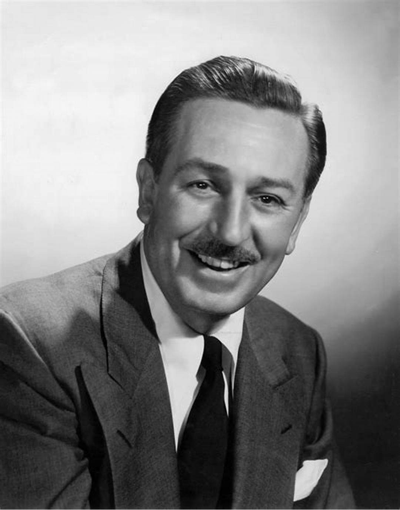

“Happiness is a state of mind. It’s just according to the way you look at things.” ― Walt Disney
Walt Disney was a quintessential American entrepreneur, animator, voice actor, and film producer whose influence on global entertainment remains profound and enduring. Born in Chicago, Illinois, Disney displayed an early fascination with drawing and animation. Alongside his brother Roy O. Disney, he co-founded what would become The Walt Disney Company, which has grown into one of the largest and most esteemed entertainment conglomerates in the world. Disney's career was marked by several groundbreaking achievements. He introduced innovations in animation techniques, transforming the industry with the creation of the first synchronized sound cartoon, "Steamboat Willie" (1928), which also marked the debut of Mickey Mouse, arguably the most recognizable cartoon character in history. Beyond animation, Disney ventured into live-action films, producing classics like "Mary Poppins" (1964), which seamlessly blended animation with live-action—a hallmark of his creativity. His commitment to quality and innovation earned him numerous accolades, including 22 Academy Awards, making him the most awarded individual in Oscar history. Disney's vision extended beyond the screen. He conceptualized and brought to life Disneyland, the world's first theme park, in Anaheim, California, in 1955. Disneyland was not just an amusement park but a place where imagination and storytelling came to life, setting the standard for theme park entertainment globally. Throughout his career, Disney remained a pioneer, constantly pushing boundaries and challenging conventional norms. His dedication to storytelling and the power of imagination continues to resonate across generations, inspiring countless individuals to dream, create, and believe in the magic of storytelling. Walt Disney's legacy transcends entertainment; it symbolizes the triumph of creativity, optimism, and the belief that with passion and perseverance, anything is possible. His impact on popular culture and the arts remains immeasurable, ensuring that his spirit lives on in the hearts and minds of people worldwide.